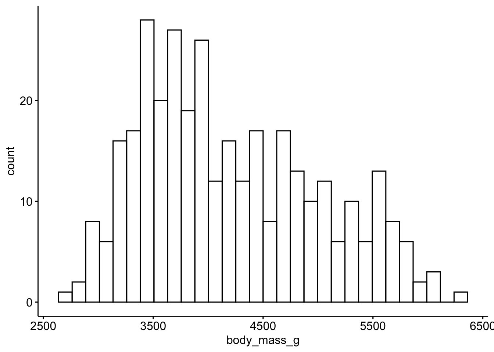
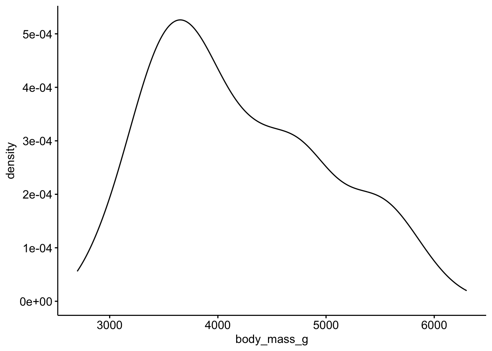
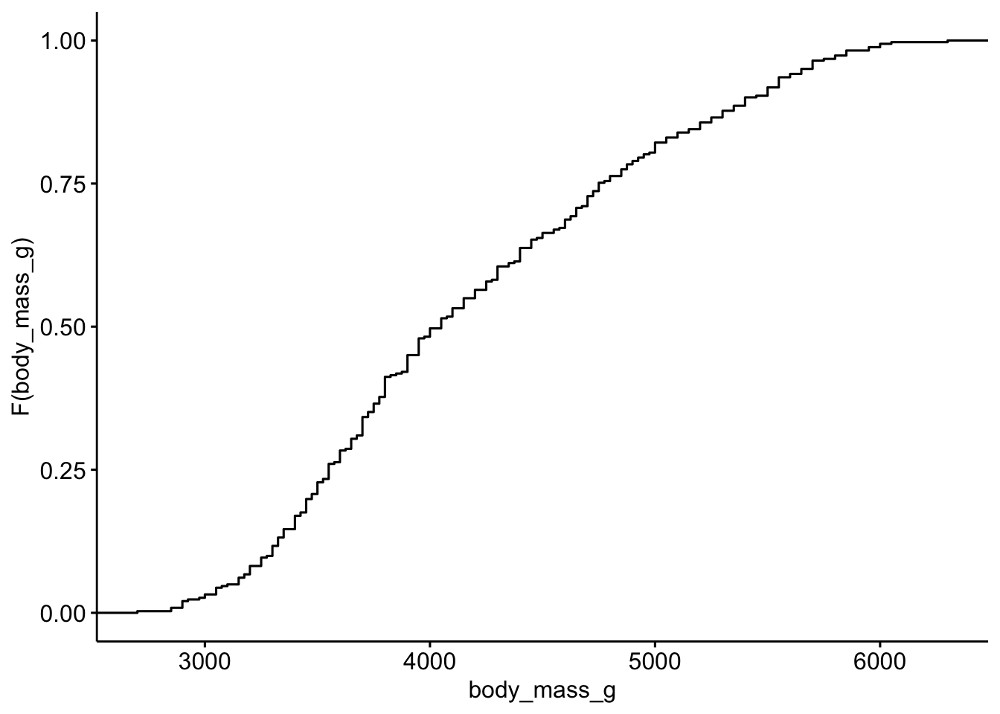
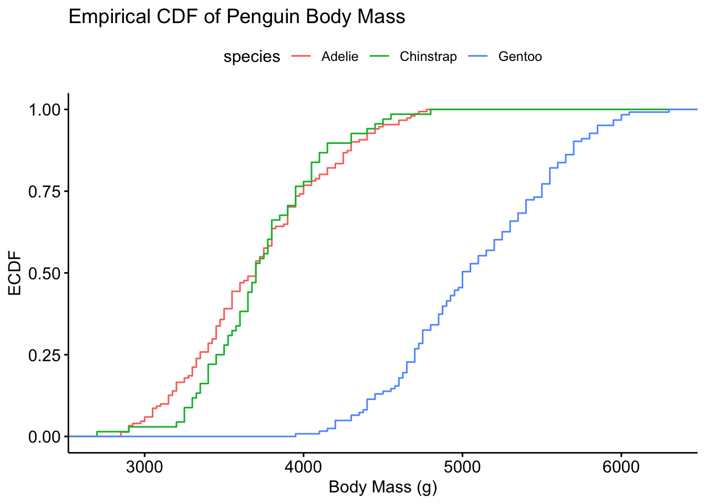
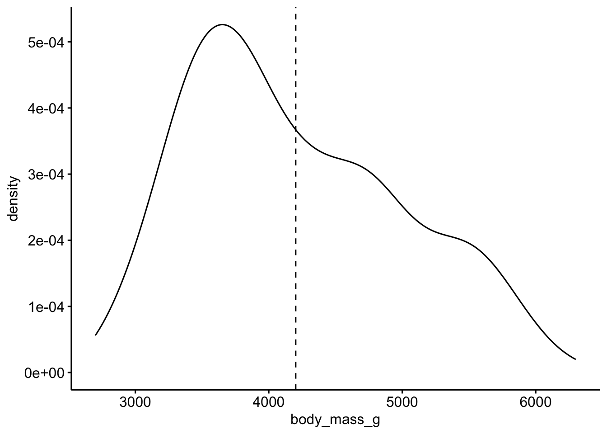

| Wahrscheinlichkeitstheorie | Deskriptive Statistik |
|---|---|
| Zufallsvariable | Merkmal |
| Wahrscheinlichkeit | relative Häufigkeit, Anteil |
| Wahrscheinlichkeitsverteilung | einfache relative Häufigkeitsverteilung |
| Verteilungsfunktion | kumulierte relative Häufigkeitsverteilung |
| Erwartungswert | Mittelwert |
| Varianz | Varianz |
verteilungsfunktion-penguins
probability
1 Aufgabe
In dieser Aufgabe beschäftigen wir uns mit der Schätzung von Wahrscheinlichkeitsaussagen auf Basis der deskriptiven Statistik.
Dabei nutzen wir den Datensatz penguins.
library(palmerpenguins)
data(penguins)- Welche Variable entspricht der Zufallsvariable Gewicht des Tieres?
- Was ist die Wahrscheinlichkeit, dass ein Pinguin weiblich ist?
- Visualisieren Sie die Wahrscheinlichkeitsverteilung des Gewichts.
- Visualisieren Sie die Verteilungsfunktion des Gewichts.
- Visualisieren Sie den Erwartungswert des Gewichts.
- Visualisieren Sie die Varianz des Gewichts.
Hinweise:
- Beachten Sie die üblichen Hinweise des Datenwerks.
2 Lösung
library(palmerpenguins)
data(penguins)library(tidyverse)
library(ggpubr)2.1 A) Welche Variable entspricht der Zufallsvariable Gewicht des Tieres?
names(penguins)[1] "species" "island" "bill_length_mm"
[4] "bill_depth_mm" "flipper_length_mm" "body_mass_g"
[7] "sex" "year" `“body_mass_g” ``
2.2 B) Was ist die Wahrscheinlichkeit, dass ein Pinguin weiblich ist?
penguins |>
filter(sex == "female") |>
nrow() / nrow(penguins)[1] 0.47965122.3 C) Visualisieren Sie die Wahrscheinlichkeitsverteilung des Gewichts.
gghistogram(penguins, x = "body_mass_g")
ggdensity(penguins, x = "body_mass_g")
2.4 D) Visualisieren Sie die Verteilungsfunktion des Gewichts.
Die empirische kumulative Verteilungsfunktion nennt man auf Englisch: empirical cumulative distribution function, kurz ECDF.
Dafür gibt es eine Funktion in ggpubrund in ggplot2.
ggecdf(penguins, x = "body_mass_g")
Ein bisschen cooler:
penguins_clean <- penguins %>%
filter(!is.na(body_mass_g))
# ECDF plot with ggpubr
ggecdf(
data = penguins_clean,
x = "body_mass_g",
color = "species", # optional: color by species
add = "mean", # optional: add mean line
xlab = "Body Mass (g)",
ylab = "ECDF",
title = "Empirical CDF of Penguin Body Mass"
)
2.5 E) Visualisieren Sie den Erwartungswert des Gewichts.
ggdensity(penguins, x = "body_mass_g", add = "mean")
2.6 F) Visualisieren Sie die Varianz des Gewichts.
Die Breite der Verteilung zeigt die Varinaz.
ggdensity(penguins, x = "body_mass_g", add = "mean")